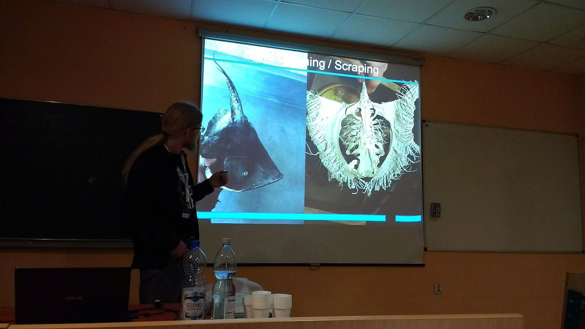
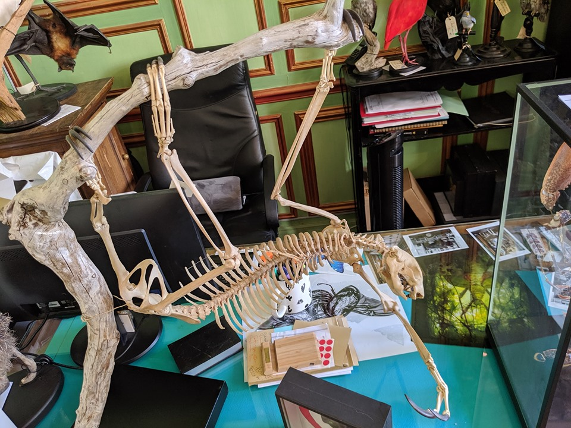
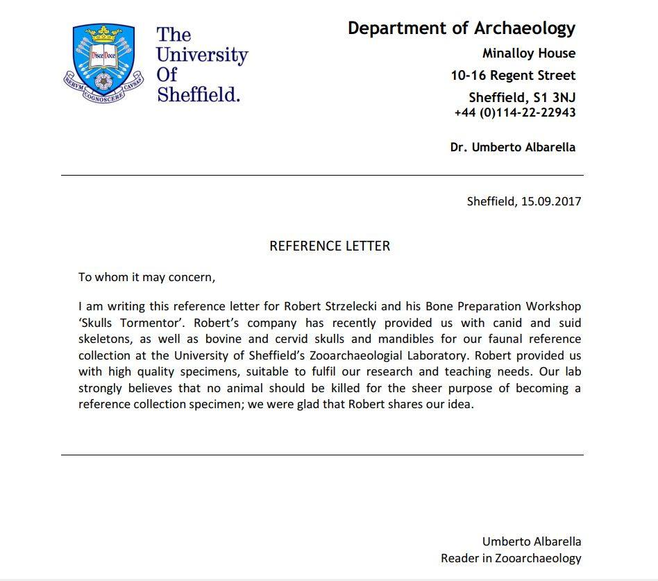

O mnie
Robert Strzelecki - Miłośnik żółwi i wszystkiego co żywe (prócz komarów. Nie lubię komarów). Preparator samouk,
od dziecka zainteresowany zoologią, lecz nie dość dobry hodowca by móc pracować z żywymi zwierzętami.
Pierwsze doświadczenia w preparatyce zdobyłem ok. roku 2008, preparując czaszkę czteromiesięcznego kota domowego,
Co pozwoliło mi na poznanie anatomii czaszki ssaka i złapanie bakcyla.

Międzynarodowa konferencja naukowa PZAF
w Instytucie archeologii w Toruniu

Leniuchowiec
W galerii Deyrolle w Paryżu

Previous
Next